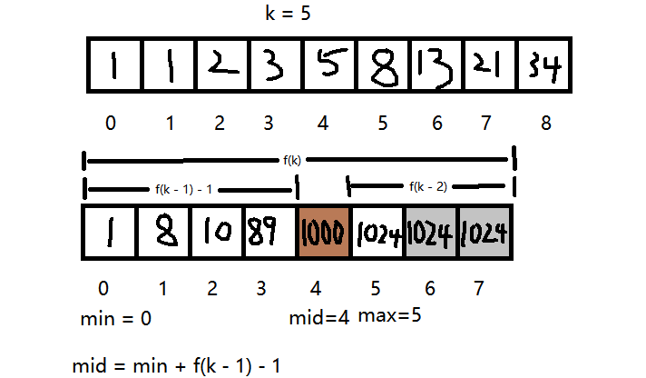
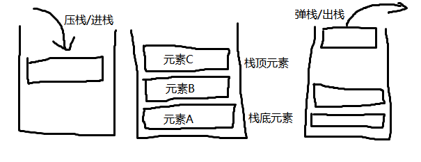
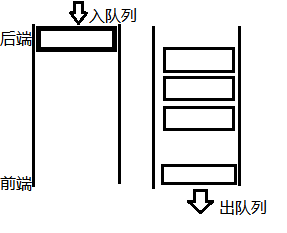
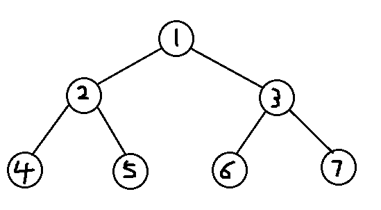
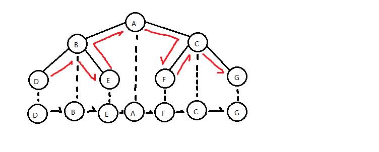
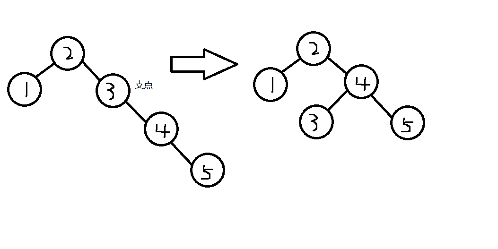
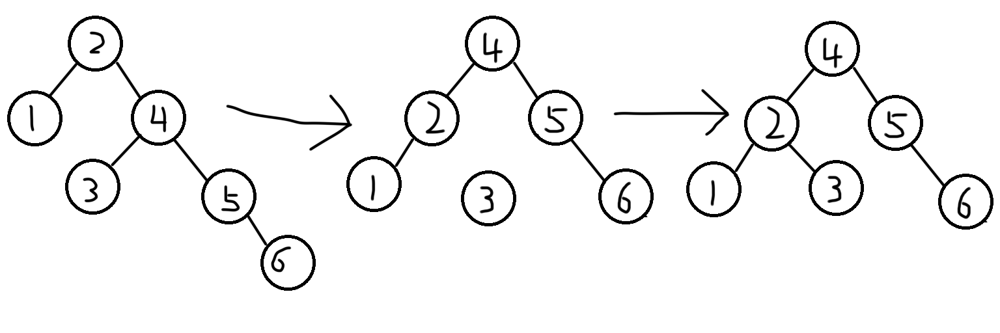
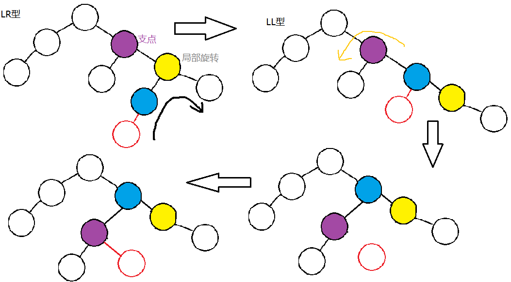
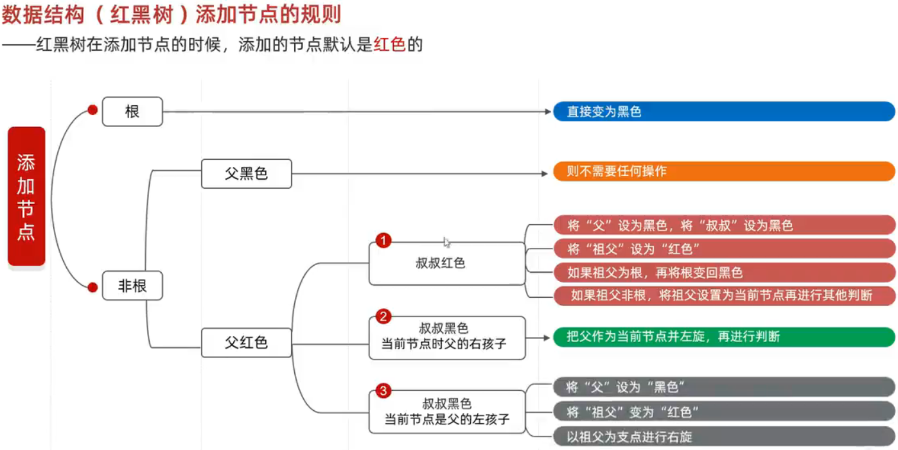

2023/12/08
Note
- Note
- 01 注释，输出，变量定义与java工具
- 02 进制，变量与取模
- 03 自变，比较，三元与原码
- 04 判断，循环与输入
- 05 循环高级，数组与不换行输出
- 06 内存，方法与数据类型
- 07 快捷键
- 08 二维数组
- 09 类，对象与javabean
- 10 printf，this,与输入
- 11 练习
- 12 字符串及其比较与遍历
- 13 字符串高级，StringBuilder与StringJoiner
- 14 字符串拼接与对象
- 15 ArrayList定义与基本用法
- 16 集合练习，break高级及程序的结束
- 17 字符串首尾判断，面向对象进阶（静态）
- 18 继承（extends,super）
- 19 多态，包，final，权限修饰符和代码块
- 20 抽象，接口
- 抽象
- 接口
- 21 接口进阶，内部类
- 默认方法
- 静态方法
- 私有方法
- 接口的应用
- 适配器设计模式
- 内部类
- 成员内部类
- 静态内部类
- 局部内部类
- 匿名内部类
- 22,23 项目——拼图
- JFrame
- JMenuBar
- JLabel
- 事件
- ActionListener
- MouseListener
- keyListener
- 路径
- 弹窗
- 输入框
- 打包
- 24 Math,System,Runtime
- Math
- System
- Runtime
- 25 Object,Objects,BigInteger
- Object
- Objects
- BigInteger
- 26 BigDecimal，正则表达式，爬虫
- BigDecimal
- 正则表达式
- 字符类
- 预定义字符
- 数量词
- 爬虫
- 27,28 时间类
- Date
- SimpleDateFormat
- Calendar
- JDK8新增时间类
- ZoneId 时区
- Instant 时间戳
- ZonedDateTime 带时区的时间
- DateTimeFormatter 用于时间的格式化和解析
- LocalDate
- LocalTime
- LocalDateTime
- Duration
- Period
- ChronoUnit
- 29,30,31 包装类，常见算法
- 包装类
- 常见算法
- 查找算法
- 基础查找
- 二分查找
- 插值查找
- 斐波那契查找
- 哈希查找
- 排序算法
- 冒泡排序
- 选择排序
- 插入排序
- 快速排序
- Arrays
- Lambda
- 32,33,34,35 集合进阶
- Collection
- 通用遍历
- 迭代器遍历
- 增强for遍历
- Lambda表达式遍历
- List系列
- 遍历方式
- ArrayList
- LinkedList
- Set系列
- HashSet
- 底层原理
- HashSet无序性
- 无索引
- 无重复
- LinkedHashSet
- TreeSet
- 第一种排序方式
- 第二种排序方式
- 使用场景
- 数据结构
- 栈
- 队列
- 数组
- 链表
- 树
- 二叉树
- 遍历方式
- 前序遍历
- 中序遍历
- 后序遍历
- 层序遍历
- 二叉查找树
- 平衡二叉树
- 左旋
- 右旋
- 旋转情况
- 左左
- 左右
- 右左
- 右右
- 红黑树
- 红黑规则
- 添加节点的规则
- 哈希表
- 哈希值
- 泛型
- 泛型类
- 泛型方法
- 泛型接口
- 泛型的继承与通配符
- 泛型的继承
- 通配符
01 注释，输出，变量定义与java工具
public不大写
String System大写
// 注释写代码上面
/* */ 多行注释
|
|
/ */** 文档注释（给他人看)
|
|
idea中可用一下方式获取可折叠代码
|
|
使用Ctrl + Alt + T可以快速插入
' '中只能为一个内容或制表符
" "一定为字符串
\t将前面字符串的长度补齐到8，或者8的倍数，最少补一个，最多补八个（即补至下一位八的倍数）,用以对齐
|
|
数据类型 变量名 = 数据值;
计算时先算右边，再赋值
java为运行程序
javac为编译程序
javap为反编译程序
02 进制，变量与取模
- 0b开头为二进制(0,1)
- 0 开头为八进制(0~7)
- 0x开头为十六进制(0~9,a~f)
|
|
小于3.3V为0,大于3.3V为1(电脑状态表示二进制)
任意进制转十进制:系数*基数的权次幂 相加(权从右往左从0开始,基数为进制,系数为每位的数) 如 0b110 为[1*(2^2)]+[1*(2^1)]+[0*(2^0)] = 6
- byte -128127(-2^52^5-1)，256个值，1个字节
- short-32768~32767，2个字节
- int-2147483648~2147483647，4个字节
- long19位数，8个字节
long定义时数据值后要加L（小写亦可，易混）
float定义时数据值后面要加F（小写亦可）
|
|
取值范围：double>float>long>int>short>byte
可通过包装后的数据类型.MAX_VALUE获取最大值
|
|
Java是强类型语言，不同类型的数据在计算时必须转为相同的数据类型
计算时，数据类型不同时，小范围数据默认先提升为另一个大范围数据类型（隐式转换），再计算
强制转换：目标数据类型 变量名 = （目标数据类型）被强制转换的数据，可能数据溢出
byte,short,char三种类型数据在运算时先提升为int，再进行计算
char隐式转换时将字符转化为ASCII码表中对应的序号
与字符串相加为拼接，不涉及隐式转换
标识符：给类，方法，变量取的名字
|
|
包名将域名反写,如www.baidu.com写为com.baidu.XXX以创建多级包
|
|
取模%应用场景：判断一个数是否能被另一个数除尽（斗地主发牌）
|
|
03 自变，比较，三元与原码
++自增1（放于变量后面先赋值后自增，反之则反之）
--自减1（同上）
|
|
+=,-=,*=,/=,%=底层都隐藏了一个强制转换，使得下述结果成立
|
|
!=不等
逻辑运算符：&逻辑与（同真方真）；|逻辑或（同假方假）；^逻辑异或（相同为假）；!逻辑非（取反：真为假，假为真）
|
|
短路逻辑运算符：&&短路与；||短路或 前者不对就不用判断后面了，效率高
|
|
三元运算符：关系表达式?表达式1:表达式2 （如果关系表达式为true则执行表达式1，否则为2），三元运算符结果必须被使用
|
|
原码：十进制的二进制表示形式，最左边一位为符号位，0为正，1为负数
反码：整数反码为本身，负数反码为原码除符号位，剩余位置取反（0变为1，1变为0），用于负数计算（10000000不能用，跨0时不能用（由负数变为正数），如0b（-5） + 0b（6），原因：超出范围，0有两种表现形式，导致-0与+0变为两个数，因此比实际值少一，-2 + 1 不算跨0）
补码：在负数的反码的基础上加1（如：-1的原码为1000 0001，反码为 1111 1110，补码为 1111 1111）计算得到的值也为补码，机器中计算与存储的形式都为补码的形式，1111 1111为-128的补码，无原码，无反码
1字节 = 1bit（0000 0000共8bit）
强制转换将二进制前面部分删除，如int(300)的二进制为 0000 0000 0000 0000 0000 0001 0010 1100转换为byte，则将前面24个bit删去，变为0010 1100，及byte(44)，注意：强转前后的二进制为补码形式，原因：计算机存储数据以补码的形式
隐式转换则为在前面加0
数字 & 数字以二进制形式计算，0为false，1为true，两者对应的都为1，结果才为1，最终结果以十进制形式表示，如：int(200) & int(10)为int(8)
0000 0000 0000 0000 0000 0000 1100 1000
0000 0000 0000 0000 0000 0000 0000 1010
————————————————————
0000 0000 0000 0000 0000 0000 0000 1000
同理，数字 | 数字相同，但以逻辑或形式计算
<<左移：向左移动，低位补，如
|
|
|0000 0000 0000 0000 0000 0000 1100 1000|
00|00 0000 0000 0000 0000 0000 1100 100000|
同理，右移>>相同，但最高位补0或1（符号位，与原来数字相同），右移除2
无符号右移>>>,与右移相同，但高位补0，符号位与原来数字无关
04 判断，循环与输入
if
|
|
switch
|
|
if的第三种格式：一般用于对范围的判断
switch：把有限个数据一一列举出来，任选其一
|
|
变量的作用范围属于所处的大括号
for循环中定义的变量，只在本次循环有效，一次循环结束后，该变量从内存中消失
idea中可用 循环次数.fori + 回车快速生成for循环
|
|
while循环可在只知反应结束条件的情况下使用
能使用for就能使用while
|
|
|
|
do...while:先循环，后判断，最后有分号
|
|
05 循环高级，数组与不换行输出
无限循环,如
|
|
无限循环下面不能写其它代码，因为无法执行到，除非有跳出语句（break;）
跳过语句（continue;）
|
|
|
|
数组的定义
|
|
初始化：在内存中，为数组容器开辟空间，并将数据储存在容器的过程
数组的静态初始化
|
|
数组创建完后，长度不能改变了
数组的动态初始化
|
|
地址值：[I@4eec7777中，[ 表示为一个数组，I 表示为该数组中的元素为int类型，@ 表示一个间隔符号（固定格式)，4eec7777 数组真正的地址值（十六进制），但习惯于将整体称为地址值
索引：数组中从第一个数值开始为0，逐个加1
数组中的元素的访问：数组名[索引]
|
|
一个循环尽量只做一件事
动态初始化用于当只知元素个数时
静态初始化用于已知数据时
数组常见问题
|
|
|
|
06 内存，方法与数据类型
内存分配：栈，堆，方法区，本地方法栈，寄存器
栈：方法运行时使用的内存，比如main方法运行，进入方法栈中执行（被调用），结束后离开方法栈，变量也在栈内存的方法区里，在所属的方法中，地址值也在所属方法区，先进后出（最先调用的方法最后离开方法栈）
堆：存储对象或数组，new来创建的，都存储在堆内存，创建对象时，成员方法的地址也存储在其中
方法区：存储可以运行的class文件（临时存储），包括成员变量与方法
本地方法栈：JVM在使用操作系统功能时使用，与开发无关
寄存器：给CPU使用，与开发无关
|
|
特殊情况
|
|
方法是程序中最小的执行单元
|
|
一般把重复的代码或者具有独立功能的代码抽取到方法当中
当return后面写的是 变量名 = 要赋予的值 时，则返回值为要赋予的值，并且该变量的值也会相应改变
重载:在同一个类中定义了多个同名的方法，具有同种功能，但形参不同（个数，类型，类型顺序），与返回值无关
|
|
基本数据类型：变量中存储的为真实值，赋的值也为真实值
引用数据类型：变量中存储的为地址值，赋的值也为地址值，两者共用同一地址值，一方改变改地址中的变量，另一者也会改变
07 快捷键
Ctrl + Alt + M: 自动抽取方法
Ctrl + /: 快速单行注释
Ctrl + Shift + /: 快速多行注释
Shift + F6: 变量批量修改
Ctrl + Alt + T: 快速添加代码块（如死循环）
Ctrl + P：查看创建对象时所需提供的数据
Alt + Enter: 对报错的内容进行操作
|
|
Ctrl + Alt +V：可快速创建对应类型的变量，已接收数据，同上
Ctrl + Shift + U：快速将所选的单词等大写
Alt + 7：罗列出当前文件的所有类，类中的内部类，成员变量，成员方法，也可搜索
Ctrl + F12：与上的功能基本相同，但无法在调出的页面关闭前操作文件
Ctrl + Shift + Up/Down：将此行的内容向上移动
08 二维数组
二维数组
|
|
09 类，对象与javabean
类的五大成员：属性，方法，构造方法，代码块，内部类
new 类名():可获取对应的对象，如Scanner
成员变量：代表属性（Fields），一般为名词，修饰符 数据类型 变量名称 = 初始化值; 一般无需指定初始化值，如姓名，每个人的姓名都不同，创建对象时一般都会修改，所以不用初始化值，定义在方法外
局部变量：定义在方法里
成员方法：代表行为，一般为动词
|
|
类：是共同特征的描述。用来描述一类事物的类，叫做JavaBean类，无main方法；有main的为测试类
对象：是真实存在的具体实例，由new创建
建议：一个java文件中只写一个类
一个代码文件中可定义多个类，但时只能有一个类是public修饰的，public修饰的类名必须与java代码的文件名相同
面向对象三大特征：封装，继承，多态
封装：对象代表什么，就要封装对应的数据，并提供数据对应的行为。谁的状态变量，就把该行为放到谁那
|
|
如：人画圆，需要人和圆两个类，画圆行为要封装到圆中，并提供半径属性；人关门，人只是给门一个力，真正的是门自己关起来的；张三看了李四，报道为张三持刀行凶，造成李四死亡，是李四死亡，死亡是李四的行为
private:修饰符，被修饰的成员只能在本类中才能访问，可通过setXX方法在其他类中进行赋值，用于判断成员变量被赋的值是否合法，用getXX方法获取变量值
this:因为就近原则，当成员变量与局部变量名称相同时，用name = name只是将局部变量name的值赋予其本身。当用this.name = name时是将局部变量name的值赋予成员变量name
构造方法:构造器，构造函数。作用：在创建对象的时候给成员变量进行赋值。不能手动调用，在创建时才会被调用。若没有写构造方法，虚拟机默认会加空参构造方法,若定义了构造方法，虚拟机不会给空参构造方法。可重载。
推荐：无论是否使用，都手写无参构造方法和带全部参数的方法
|
|
标准JavaBean：成员变量使用private修饰；提供至少两个构造方法；提供每一个成员变量对应的getXX()与setXX()；类名见名知意
Alt +Insert:快速生成getXX/setXX/构造方法等方法
插件ptg：快速生成标准JavaBean
创建对象：1.加载class文件（当创建两个对象时，第二次不用再加载了），2.声明局部变量，3.在堆内存中开辟一个空间，4.默认初始化，5.显示初始化（直接给了值，如int i = 1; 0为默认初始值，1为显示初始值），6.构造方法初始化，7.将堆内存中的地址值赋值给左边的局部变量
10 printf，this,与输入
this本质：所在方法调用者（对象）的地址值
成员变量有默认初始值，局部变量无默认初始值，使用需赋值
|
|
Ctrl + P：查看创建对象时所需提供的数据
|
|
11 练习
练习
12 字符串及其比较与遍历
String对象一旦创建后就不能改变其值
|
|
|
|
串池 StringTable 位置
- JDK7以前位于方法区
- JDK7以后位于堆空间
通过直接赋值形式的字符串都存储再串池中
|
|
==：若为基本数据类型(byte,short,int,long,double,float,char,boolean)，比的是值，否则比的是地址值
输入的字符串如"abc"，与代码中的字符串"abc"用==时为false，原因：输入的为new出的
比较：
|
|
遍历
|
|
13 字符串高级，StringBuilder与StringJoiner
截取
|
|
替换
|
|
拼接
|
|
变换
|
|
顺序比较
|
|
StringBuilder
|
|
链式编程：当我们在调用一个方法的时候，不需要变量接收他的结果，可以继续调用其他方法，如
|
|
StringJoiner
|
|
14 字符串拼接与对象
String类型拼接时，一个加号会有两个对象
|
|
|
|
StringBuilder是一个内容可变的容器
|
|
15 ArrayList定义与基本用法
集合ArrayList 长度可变
|
|
用法
|
|
16 集合练习，break高级及程序的结束
添加基本数据类型，包装类
|
|
break高级
|
|
结束程序
|
|
17 字符串首尾判断，面向对象进阶（静态）
|
|
static 静态 使成员变量的值公有化(共用变量的地址值)，使类的方法可用 类.方法 进行调用
|
|
在加载字节码文件时，会在堆内存中生成静态存储位置（静态区），存储着所有的静态变量
而对象在类加载完后才通过new创建，所以静态变量优先于成员变量创建，静态变量不属于对象，属于类
静态变量推荐用类名调用：静态变量属于类，而非对象
/----------------------------------------------------------------------------/
实例变量即对象的成员变量
静态方法只能访问静态；非静态方法可以访问静态与非静态；静态方法无this,super关键字
|
|
JDK8以前不管静态还是非静态都在方法区
JDK8以后静态变量存储在堆内存的静态存储位置（静态区）
/---------------------------------------------------------------------/
JavaBean类：用来描述一类事物的方法，可用来创建对象
测试类：检测其他类是否正确，有main方法
工具类：帮助我们做一些事情，但不描述任何事物，如Math，特点：私有化构造方法，不用来创建对象，方法都为静态
/----------------------------------------------------------------------------/
静态方法多用于测试类与工具类
String[] args：以前用于接收键盘录入的数据，现在没用，为了上下兼容而保留
录入的数据是IDE运行时的配置
红框内输入，用空格隔开，如123 456 789
则args为{"123","456","789"}
18 继承（extends,super）
命名：作用+父类名（如FileInputStream，File是该类的作用，InputStream是它的父类）
封装：对象代表什么，就要封装对应的数据，并提供数据对应的行为
若无封装，就需把原本被封装的对象的数据一一传入方法，要写很长，而封装只用传递对象
继承：当多个JavaBean类含有相同的成员变量与方法时，可将其封装入一个父类，子类可以使用父类中的成员变量与方法，提高了代码的复用性
|
|
|
|
子类加载入方法区时，父类一并加入
继承的成员变量会存储在对象的空间中，与子类的成员变量共用同一对象的地址值，但一部分空间存储父类的成员变量（包括私有的，但无法调用），一部分存储子类
java会将父类中经常需要用的方法放在虚方法表中（非private 非static 非final）,继承时把虚方法表交给子类，子类在其基础上添加自己类的虚方法
|
|
Object有五个虚方法
继承中：
~成员变量的访问特点：就近原则
~优先级为 本类局部变量>本类成员变量>直接父类成员变量>间接父类成员变量
|
|
~成员方法的访问特点：就近原则
~本类成员变量>直接父类继承的成员变量>间接父类继承的成员方法
|
|
~构造方法访问特点：不可继承；子类的构造方法默认先访问父类空参构造，以初始化父类中的数据
|
|
this:理解为对象，对象的地址值为调用者本身,是局部变量
super:父类的存储空间
this():调用本类其他构造方法，则就不会添加super();了，原因：其他构造方法有super();，this()必须写第一行,当要给某些数据默认值时使用
19 多态，包，final，权限修饰符和代码块
多态(polymorphism)：可以把new出的子类赋予父类和自己
|
|
多态前提：
1)有继承、实现关系
2)有父类引用指向子类对象，如Person p = new Student();Person指向了Student
3)有方法重写
多态好处：使用父类作为参数，可以接收说有子类对象
调用成员变量：编译看左边，运行也看左边
|
|
调用成员方法：编译看左边，运行看右边
|
|
在java中加载字节码文件时，先加载父类，在加载子类
多态优势
(1)在多态形势下，右边的对象可以实现解耦合，编译扩展与维护
|
|
(2)定义方法时，使用父类作参数，可以接收所有的子类对象，体现多态的扩展性与便利
|
|
多态弊端：使用多态时，只会调用父类具有的方法，不能调用子类的特有功能，原因：编译看左边
解决方案
|
|
包名：公司域名反写+包的作用
|
|
final:
~类：不能被继承
~方法：不能被重写
~变量：叫做常量，只能赋值一次，作为系统配置信息，方便维护，提高代码可读性，做枚举
|
|
native：修饰方法，调用本地c语言，汇编语言,在java中看不到方法体，与操作系统进行交互
|
|
权限修饰符及作用范围:
~private：同一类，可将本类中共性代码抽取出一个方法，该方法private，仅供本类使用
~空着不写(缺省、默认)：同上，同包其他类
~protected：同上，不同包下的子类
~public：同上，不同包的无关类
代码块：
~局部代码块
|
|
~构造代码块：写在成员位置的代码块，可以把多个构造方法执行的抽取出来
缺点：不够灵活，若有个别构造方法不想执行构造代码块中的内容，无法做到
现在可通过将代码抽取到一个构造方法或方法中，然后调用
|
|
~静态代码块：随着类的加载而加载，并自动触发，只执行一次
使用场景：在类加载的情况下，对成员变量初始化
|
|
20 抽象，接口
抽象
抽象修饰符：abstract
抽象方法：将共性方法提取到父类，但每个之类执行后不同，所以父类中的不能确定具体的方法体，该方法就可以定义为抽象方法
抽象类：如果类中有抽象方法，该类就必须为抽象类
|
|
注意事项:
（1）抽象类不能实例化（创建对象）
（2）抽象类不一定有抽象方法，抽象方法一定在抽象类或接口
（3）可以有构造方法，子类的构造方法可以调用 super(参数);
（4）抽象类的子类，要么重写抽象类中所有的抽象方法，要么是抽象类
意义：团队项目中，用于规范代码，统一方法，方便调用
/---------------------------------------------------------------------/
接口
接口修饰符：interface
接口调用：implements
意义：规范代码，统一方法
如 兔子，青蛙，狗都继承于动物，青蛙与狗会游泳，但兔子不会，因此需要给青蛙与狗一个单独的方法，但若是都写，代码可能不规范如 swim 与 swimming，因此需要接口
需要的是功能，而不是继承体系时，使用接口
接口是一种规则，是对行为的抽象
|
|
成员变量：只能是常量，默认修饰符：public static final 没加会默认加,必须附默认值
|
|
构造方法：没有
成员方法：
（1）JDK7以前只能写抽象方法，默认修饰符：public abstract
（2）JDK8接口可以定义有方法体的方法了
（3）JDK9接口可定义私有方法了
类与类的关系：继承关系，只能单继承，可多层继承
类和接口的关系，实现关系，可以多实现，多接口有重名，只用重写一次
接口与接口的关系：继承关系，可以单继承，也可以多继承，若类继承子接口，也需把其继承的抽象方法全部重写
21 接口进阶，内部类
默认方法
JDK8以后允许在接口定义默认方法，需用default修饰
|
|
注意事项：
~默认方法不是抽象类，不强制重写，但如果被重写，需去掉default(重写的方法不加，接口不变)
~public可以省略，default不可省略
~如果实现了多个接口，多个接口中存在相同名字的默认方法，子类必须重写
接口中的默认方法若没被重写，对象可调用该方法（相当于继承下的方法）
|
|
静态方法
JDK8以后允许在接口定义静态方法，需用static修饰
|
|
注意事项：
~静态方法只能通过接口名调用，不能通过实现类名或对象名调用，不能重写
~public可省略，static不可省略
私有方法
JDK9新增的方法
|
|
接口的应用
接口的多态：如果方法的参数写成接口，则可传递所有的实现类对象
|
|
遵守多态规则：编译看左边，运行看右边
适配器设计模式
设计模式：是一套被反复使用，多数人知晓的，经过分类编目的，代码设计经验的总结
使用设计模式为了可重用代码，让代码更容易被他人理解，保证代码可靠性，程序的重用性
简单理解：设计模式就是各种套路
适配器设计模式：解决接口与接口实现类之间的矛盾问题
若一个接口有多个抽象方法，但只要用个别的方法时，若全部重写，代码会阅读不便
因此需要一个中转类，实现该接口，然后让需要实现个别功能的类继承该类，再重写个别方法
该类一般为抽象类，名字为XXXAdapter
内部类
在一个类中再定义一个类
外部类：普通类
内部类：定义在普通类中的类
外部其他类：也是普通类，只是相对而言
定义情况：内部类表示的事物，是外部类的一部分，且内部类单独存在无意义，如发动机类可定义在汽车类中，发动机要依赖车
内部类的访问特点：
~内部类可以直接访问外部类的成员，包括私有
~外部类要创建内部类的成员，必须创建对象
内部类分类：成员内部类，静态内部类，局部内部类，匿名内部类
除匿名内部类外，其他了解即可
成员内部类
写在成员位置，属于外部类的成员
能修饰成员变量的修饰符，也能修饰成员内部类
静态修饰的不是成员内部类
JDK16以前成员内部类中不能定义静态变量的
|
|
无论外部类的成员变量是否为private，内部类均可访问，可通过new 外部类.成员变量（默认值）或外部类.this.成员变量访问
|
|
不可通过内部类对象调用外部类的成员变量与方法
外部类与内部类在内存中是两个独立的字节码文件
$用于内部类的命名，系统命名，如内部类Inner的字节码文件Outer$Inner.class
因为new Outer().new Inner()中有两个new，所以在堆中开辟两个空间，外部类与内部类，在内部类中有一个隐藏的成员变量外部类名 this，不可通过内部类对象访问
静态内部类
只能访问内部类中的静态变量和静态方法，如果想要访问非静态的还需创建对象
|
|
静态内部类不能使用外部类.this.成员变量，可以使用new 外部类.成员变量
静态内部类的方法不能直接访问外部类的非静态成员变量，但可以访问静态
局部内部类
将类定义到方法内，类似局部变量，不可用权限修饰符，可修饰final，
外界无法直接使用，需要在方法内部创建对象并使用
该类可访问方法内局部变量与外部类的成员变量
很少用
匿名内部类
包括：继承与实现关系，方法的重写，创建对象
可以写在成员位置，也可写在局部位置
|
|
匿名内部类实际上是大括号（包括大括号）中的内容，new是创建该匿名内部类的对象
小括号的意思是调用了该匿名内部类的空参构造
Inter与后面的匿名内部类是实现关系
Test与后面的匿名内部类是继承关系，可以使用super进行调用Test中的方法
实际上并非没有名字，该匿名内部类的字节码文件名如Test$1.class
|
|
使用场景：
~可以把匿名内部类的对象赋值给实现的接口
~当方法的参数时接口或者这个类时，以接口为例，可以传递这个接口的实现类对象，如果实现类只要使用一次，可使用匿名内部类简化
可以在匿名内部类的结尾通过 . 调用其中的所有方法，私有也可
22,23 项目——拼图
图形化界面：GUI
组件：JFrame,JMenuBar,JLabel....
JFrame：最外层的窗体
JMenuBar：最上层的菜单
JLabel：管理文字和图片的容器
JFrame
|
|
将界面写为对象，如登入界面LoginJFrame，并继承于JFrame，则新建LoginJFrame对象时，就会创建登入界面窗体，该窗体涉及的逻辑代码都可以写于该类
通过对象的空参构造，来对对象初始化，其中setVisible()方法最后使用
|
|
JMenuBar
~Jmenu
~~JmenuItem
|
|
可以在JMenu中放入JMenu，然后在被放入的JMenu中添加JMenuItem，以形成分支
推荐：将功能抽取到特定方法，以便后续对代码的改动，如与初始化窗体有关的可放在initJFrame()方法中，与初始化菜单有关的，可放在initJMenuBar()中，其中init为初始化
JLabel
|
|
坐标以菜单下的左上角为原点
JFrame中除了标题栏和菜单栏外，还有一个隐藏的容器(Panel)，存储所有组件，若没特殊要求，组件会在中间位置(默认)
|
|
一维数组不方便锁定图片的位置，因此采取二维数组的形式，存储图片对应的序号，以便移动时交换图片的位置
注意：先加载的图片位于后加载的图片的上方
|
|
|
|
事件
事件源：按钮，图片，窗体
事件：某些操作
绑定监听：当事件源发生了某个时间，则执行某段代码
~键盘监听：KeyListener
~鼠标监听：MouseListener
~动作监听：ActionListener，鼠标与键盘的精简版，监听鼠标只能点击，监听键盘只有空格
ActionListener
|
|
MouseListener
|
|
keyListener
|
|
在keyReleased编写，按一次只执行一次
路径
绝对路径：从盘符开始
相对路径：从当前项目开始，如 day-code\\image\\background.png，day-code为本模块名
异常并不会使程序结束，而会在控制台报错
弹窗
JDialog
|
|
输入框
JTextField：明文显示的输入框
JPasswordField：密文显示的输入框
打包
考虑因素：一定要有图形化界面，代码，资源，jdk要打包
1.把所有带啊吗打包成一个压缩包。jar后缀
2.把jar包转化为exe安装包
3.把上一步的exe，图片，JDK整合在一起，变成最后的exe文件
需要软件exe4j，innosetup
24 Math,System,Runtime
Math
|
|
System
计算机的时间原点，1970年1月1日 00:00:00，C语言的生日
因为时差原因，中国的原点为1970年1月1日 08:00:00
1 s = 1000 ms
|
|
Runtime
|
|
shutdown -s：默认一分钟，-s -t：在t后面指定时间，要有空格 -r ：关机并重启 -a：取消
25 Object,Objects,BigInteger
Object
Object是java中的顶级父类
|
|
如果打印对象时想要的结果为它的属性，可以重写toString方法，利用ptg插件可以一键做到
也可以用Alt + Insert重写该方法
标记接口：一个接口中没有抽象方法
|
|
浅克隆：将一个对象中的数据的值或地址值一一赋予给另一个对象中的属性
深克隆：如果是基本数据类型，则直接拷贝值，如果是引用数据类型，则会重新创建，然后把其中的值赋予，地址值不同，如果是字符串，则会复用，原因：在串池中存在
Object的clone为浅克隆，深克隆可自己重写，一般使用第三方工具(非官方的代码 Gson)，该代码需导入到项目，并存储到模块名下的lib文件夹中
Objects
工具类，用类名调用方法
若一个对象的值为null，则不可使用其中的方法
可以自己检测对象是否为null，也可以使用Objects
|
|
BigInteger
比long更大
有上限，但非常大
对象一旦创建内部的值不可变，为引用数据类型
|
|
优化：BigInteger内部已经创建了-16~16的对象，获取时不会再创建对象了
若值比较小，推荐用静态方法valueOf
常见成员方法
|
|
原理
将数据的补码按每32个位为一组（110 有三位），存入数组中，数组有最大长度2147483647，但目前电脑存储不了这么多，将近能存储的最大数字位42亿的21次方，所以认为其几乎无限
26 BigDecimal，正则表达式，爬虫
BigDecimal
小数运算结果不精确，原因：小数的二进制，如0.9的小数部分二进制为11100110011001100.....，这样依旧无法精确，只是接近，计算时，因小数类型的长度有限，被舍弃的部分导致了运算不精确
BigDecima是不可变的、任意精度的有符号十进制数
|
|
其中0~10的整数对应的BigDecimal已经创建，通过valueOf(long val)可获取，就不会再重新创建了
|
|
原理
举例：使用new BigDecimal(String val),java会对val进行遍历，得到每一个元素的ascii码，如"0.226"为[48,46,50,50,54]，点也在其中，负号也会存在其中第一位，正号不存
正则表达式
|
|
作用：（1）检验字符串是否满足规则（2）在一段文本中查找内容
字符类
|
|
预定义字符
因为java中\为转义字符，所以若想在字符串中使用\需要\\
|
|
数量词
也可以用来判断长度
|
|
通过API文档中的Pattern可查看可用正则表达式
|
|
使用|以对同一段数据进行多个规则的判断(写在方括号里表并集)
|
|
^(正则表达式)\$，若出现这种正则表达式，^代表从头开始,\$代表到结尾，因java中所用的matches方法默认从头开始，到结尾结束，所以可以不用
|
|
爬虫
Pattern：表示正则表达式
Matcher:文本匹配器
|
|
从网络上爬取，暂时未学
|
|
贪婪爬取
|
|
|
|
|
|
贪婪爬取：在爬取数据时尽可能多获取数据
非贪婪爬取：在爬取数据时尽可能少获取数据
|
|
正则表达式在字符串方法中的使用
|
|
方法的形参为regex，则为正则表达式
分组
即小括号
每组都有组号，即序号，从1开始，连续不间断，以左括号为基准，最左边为第一组，依次往下
如:(\\\w(\\\w))(\\\w)共有三组
捕获分组
即把这一组的数据拿出来，再用一次
|
|
在正则表达式内使用\\\；在正则表达式外部使用$
|
|
非捕获分组
仅仅括起来，但没组号，如(?=) (?:) (?!)
更多的使用(?:)，原因：查找包括，获取也包括
27,28 时间类
同一条经线的时间是一样的
本初子午线以东加时间，以西减时间
以前：英国格林尼治的时间（GMT）为标准时间
现在：原子钟作为世界标准时间（UTC）
中国时间：东八区，即加8小时
Date
|
|
SimpleDateFormat
格式化：把时间的格式改变
解析：把字符串表示的时间变为Date对象
|
|
|
|
注意：0:01:00 与 0:0:0是同种格式
Calendar
应用场景：可单独修改，获取年，月，日
Calendar是抽象类
|
|
JDK8新增时间类
优点：代码简便，多线程下JDK7的时间类会导致数据安全问题，但由于JDK8的时间类的对象不可变的原因，解决了这个问题
Date类：ZoneId,Instant,ZoneDateTime
日历类：LocalDate,LocalTime,LocalDateTime
日期格式化类：DateTimeFormatter
工具类：Duration,Period,ChronoUnit
ZoneId 时区
时区格式：洲名/城市名或国家名/城市名
|
|
Instant 时间戳
获取的不带时区，须在基础上加8个小时
|
|
ZonedDateTime 带时区的时间
|
|
DateTimeFormatter 用于时间的格式化和解析
|
|
LocalDate
年，月，日
LocalTime
时分秒
LocalDateTime
年,月,日,时分,秒
|
|
Duration
用于计算两个时间的间隔（秒，纳秒）
|
|
获取总日，时，分，秒，毫秒，纳秒（整数）
Period
用于计算两个日期的间隔（年，月，日）
|
|
获取总年，月（整数）
ChronoUnit
用于计算两个日期的间隔
最常用
|
|
29,30,31 包装类，常见算法
包装类
基本数据类型所对应的应用数据类型，即用一个对象包装数据
若无包装类，则形参类型为Object时，无法将基本数据类型传入，程序会有局限性
JDK5以前，获取Integer对象需要new或者通过静态方法valueOf
|
|
JDK5以后提出了自动装箱和自动拆箱机制
|
|
Integer类型与int类型相加结果为int类型，原因：Integer是引用数据类型，无法运算，但在java的自动拆装箱的功能下，可以将其变为基本数据类型，然后再运算
静态方法
|
|
常见算法
查找算法
基础查找
一个一个按顺序查找
|
|
二分查找
数组必须有序
1.定义min为0，max为数组最大索引，mid为两者和的一半（整数，小数舍去），
2.如果mid对应的数据大于目标值，max = mid - 1，重新获取mid的值，
3.如果mid对应的数据小于目标值，min = mid + 1，重新获取mid的值，
4.重复执行，直到获取到目标值，此时mid即为其索引，
5.如果min大于max，说明不存在目标值
|
|
插值查找
若一个数列分布比较均匀或很均匀，如{2,4,6,8,10}
可利用公式查找
$$ mid = min + \frac {target - arr[min]}{arr[max] - arr[min]} \times (max - min) $$
该方法是二分法的改进
斐波那契查找
该方法是二分法的改进
解释：
因为斐波那契数列的相邻连两个值的比逐渐接近于黄金分割比，所以用其中的值代替mid的索引
$$f(k) = f(k - 1) + f(k - 2)$$
其中f(k)与f(k-1)的值比接近黄金分割比
所以想要mid为数组的黄金分割点，需将f(k)作为整体长度，则f(k-1) - 1为mid的值（索引包括0）
mid对应的值大于目标值，事例：在数组 {1,8,10,89,1000,1024} 中
因为数组的长度为6，所以f(k)的值是最接近6，且大于6的，所以k = 5
因为要使f(k)的值作整个数组的长度，所以会对数组进行扩容，且扩容的内容的值为最后一个数据的值
由公式
$$ mid = min + f(k - 1) - 1 $$
可得mid的值为4
如查找 89
因为索引4对应的数据的值大于目标值，所以max = mid - 1
因为mid左边的长度为f(k - 1) - 1，所以可近似认为其为f(k - 1)，因此 新的k值 为 旧的k - 1
而f(k - 1) 与 f(k - 2)的值比接近黄金分割比 ，所以可以继续往下分割
综上，当mid对应的值大于目标值时，k--
如查找1024
因为索引4对应的数据的值小于目标值，所以min = mid + 1
因为mid右边的长度为f(k - 2)，所以 新的k值 为 旧的k值 - 2
而f(k-2) 与 f(k - 3)的值比接近黄金分割比，所以可以继续往下分割
综上，当mid对应的值小于目标值时，k -= 2
注意：获取的索引值要为最小的那个，因为最后一个的值有被复制，可能会返回大于原数组长度的索引
分块查找
在无序中有序
把数组分成n份小块，前一块的最大数据，小于后一块的最小数据
块数数量一般等于数字的个数开根号，比如16个数字一般分为4块
每一块都创建对象，记录每一块的最大值，起始索引，结束索引，该对象称为索引表
然后通过方法获取目标值在哪一块
|
|
各块间最大值有序
拓展思想
记录最小值，可以应对各块间最大值无序的情况
哈希查找
分块查找的优化
排序算法
冒泡排序
效率一般
把相邻的数据两两比较，小放前面，大放后面
选择排序
效率一般
从0索引开始，拿着每个索引上的元素跟后面的元素一次比较，调整位置
插入排序
效率较高
共有N个数据，把0索引到n索引的有序数据看作有序，另外的数据看作为无序，通过遍历得到每个无序的数据，并将其插入到有序数据中，如有相同，插后面
|
|
快速排序
效率高
递归算法：方法中调用本身，可能会有栈内存溢出的异常，每次调用都会将该方法加载到栈内存
注意：递归一定要有出口，即停止调用，在每一次再次调用方法时，参数一定比上一次更靠近出口
第一轮：把0索引的数字当作基准数，确定基准数的正确位置，比基准数小的全在左边，大的在右边
基准数归位，基准数到达正确的位置
第二轮：在基准数的左边确认新的基准数及其位置，在基准数的右边确认新的基准数及其位置，重复执行，直到起始索引大于终止索引
|
|
如果start比end先移动，则在基准数归位时，会把大于基准数的数移动到左边
Arrays
|
|
Lambda
简化匿名内部类的书写
|
|
面向对象：先找对象，让对象做事情
函数式编程：一种思想特点，忽略了面向对象的复杂语法，强调做什么，而不是谁去做
JDK8出现的新语法形式
|
|
注意
~Lambda表达式只可以用来简化匿名内部类的书写
~Lambda表达式只能简化函数式接口的匿名内部类写法
函数式接口：有且仅有一个抽象方法的接口，接口上方可以加@FunctionalInterface，不满足要求报错
Lambda的省略写法
核心：可推导，可省略
~参数类型可以省略不写
~如果只有一个参数，小括号可以省略不写，省略小括号就必须省略参数类型
~如果Lambda表达式的方法体只有一行，大括号，分号，return可以省略不写，需同时省略
多参数不能省略小括号原因：匿名内部类被使用时，一般都是方法的实参，而实参间用逗号隔开，会使java无法分辨（推导）出其参数，如a(1,( a1,a2) -> {})变为a(1,a1,a2 -> {})，难以分清
|
|
32,33,34,35 集合进阶
单列集合：一次添加一个数据
双列集合：一次添加一对数据（如python中的字典）
Collection
是单列集合的顶层接口
|
|
通用遍历
迭代器遍历，增强for遍历（不依赖索引遍历），Lambda表达式遍历
迭代器遍历
Iterator
想要删除元素时使用
|
|
注意：
~迭代器遍历完毕后指针不会复位，需重新创建
~若在hasNext为false的情况下，依旧使用next，则会报错NoSuchElementException
~在循环中只能用一次next方法，不然可能会发生上述的错误
~迭代器遍历时，不能用集合的方法进行增加或删除元素，会报错
~每次使用next方法时，都会对数组的修改次数进行判断，所以在调用后修改数据，直到下一次调用next方法，否则不会报错
增强for遍历
增强for出现于JDK5，底层就是Iterator迭代器，是为了简化迭代器代码
只有所有的单列集合和数组可用增强for
不可删除元素
|
|
使用 数组名.for 可快速生成
Lambda表达式遍历
不可删除元素
|
|
List系列
List为接口，不可直接创建
特点：添加的元素是有序的（添加时的顺序与遍历时的顺序相同），可重复的，有索引的
ArrayList，LinkedList，Vector(在1.2时被淘汰了)
|
|
遍历方式
包括迭代器遍历，增强for遍历，Lambda表达式遍历
以及List独有的列表迭代器遍历与普通for循环
|
|
其中，若想删除元素，使用迭代器
若想添加或修改元素，使用列表迭代器
仅仅想遍历，使用Lambda表达式或增强for
若想操作索引，使用普通for
ArrayList
数据类型：数组
默认长度：0
当添加第一个元素后，底层会创建一个新的长度为10的数组，该数组名字为elementData
存满后，扩容1.5倍
一次添加多个元素，1.5倍还放不下，则新创建的数组以实际为准
|
|
其中的modCount变量为变化的次数g'g'g'g'g'g'g'g'g'g'g'g'g'g'g'g'g'g'g
LinkedList
数据结构：双向链表
|
|
内部类Node的对象为一个结点
LinkedList对象一旦创建，就会创建头结点与尾结点，但都是默认初始化值null
Set系列
Set为接口
特点：添加的元素是无序的，不重复的（用于数据的去重），无索引的
HashSet，LinkedHashSet（HashSet子类），TreeSet
无序性
|
|
HashSet
采用哈希表的数据结构存储
存储自定义对象时，必须重写equals与hashCode方法
去重默认使用HashSet，除非要求有序，因为LinkedHashSet消耗资源更多
底层原理
1）首先会创建一个默认长度为16，默认加载因子为0.75的数组，数组名为table（重要）
2）然后根据公式算出存入位置
3）判断当前位置是否为null，是null则存
4）如果不是null，调用equals方法比较
5）一样则不存，不同则存入数组，并形成链表
JDK8以前：新元素存入数组，老元素挂下面
JDK8以后：新元素挂老元素下面
当数组长度为 长度 * 加载因子 时进行扩容，扩容两倍
当链表的长度大于8，而且数组的长度大于等于64时，当前链表转换为红黑树 (JDK8以前没有)
HashSet无序性
添加时按照hashCode来存储，导致了存入的元素的先后位置的不同
无索引
hashSet底层有数组，链表，红黑树，导致索引难以定义
无重复
再添加时会比较hashCode与equals两个方法进行比较，相同的就不会存入了
LinkedHashSet
HashSet的子类
但有序
原理：底层数据结构依旧是哈希表，只是每个元素有额外多了一个双链表记录存储顺序
存入的第一个元素会存着下一个元素的地址值，下一个元素又存着上一个元素的地址值
TreeSet
可排序，默认按从小到大的顺序
数据结构：红黑树
排序规则：
~对于数值类型：Integer，Double，默认按照从小到大的顺序排列
~对于字符、字符串类型：按照字符在ASCII码表的数字升序进行排序，短的在其他字符都相同的情况下更小
如：aaa在aaaa前面
~自定义类：自己定义比较方式
默认使用第一种方式，第一种方式不能实现，再使用第二种方式
当方式一与方式二同时存在时，以方式二为主
第一种排序方式
默认排序/自然排序：JavaBean类实现Comparable接口指定比较规则
自定义类要实现Comparable接口
不必重写equals与hashCode方法
根据重写的compareTo方法的返回值进行判断
~返回值为0，则认为是同一元素，舍弃
~为负数，则认为其更小，存左边
~为正数，则认为其更大，存右边
根据上述的规则，可以对其进行排序
添加根节点时，根节点会与自己比较
|
|
第二种排序方式
比较器排序：创建TreeSet对象时，传递比较器Comparator指定规则
实际传的是Comparator实现对象，可用匿名内部类，或Lambda表达式
|
|
使用场景
- 如果想要集合中的元素重复，使用ArrayList集合
- 如果集合中增删操作明显多于查询，使用LinkedList集合
- 如果想要对集合中的元素去重，使用HashSet集合
- 如果想要去重，且保证存储顺序，使用LinkedHashSet集合
- 如果想要对元素排序，使用TreeSet集合
数据结构
计算机底层存储，组织数据的方式
指数据相互之间是以什么方式排列在一起的
数据结构是为了更加方便的管理和使用数据
八大基础结构：栈，队列，数组，链表，二叉树，二叉查找树，平衡二叉树，红黑树
栈
特点：后进先出，先进后出
数据进入栈的过程称为压栈/进栈
数据离开栈的过程称为弹栈/出栈
最上面的数据称为栈顶元素
最下面的数据称为栈底元素
栈内存运用的也是这种思想
队列
先进先出，后进后出
要求：数据从后端进，从前端出
从后端进队列叫入队列
从前端出队列叫出队列
类似买票排队
数组
查询效率高：通过地址值和索引定位，查询任意数据耗时相同（元素在内存中是连续存储的）
删除效率低：将原始数据删除，同时每个数据前移
添加效率低：将每个数据后移，再将指定元素添加
链表
查询效率低：无论查询哪一个数据都要从头结点开始找
删除效率高：不用移动其他结点
添加效率高：不用移动其他结点
每一个元素称为结点，每个结点都是独立的对象，所以都有独立的地址值，在内存中不连续
结点中存储了本结点要存储的数据，同时存储了下一个结点的地址值
第一个被创建的结点为头结点，若无后续的结点，则再下一个结点的地址值的位置上存储^
在每次创建完新结点后，将该结点的地址值赋予前一结点的存储下一个地址值的位置上
单向链表：只能从前往后找
双向链表：可以从后往前找，该链表的结点中存储了本结点的值，上一个结点的地址值，下一个结点的地址值，当查询第几个元素时，查询效率提升
树
每个元素都是一个节点（结点），即Node
每一个节点都关联两个节点
父节点：节点2是节点4与节点5的父节点
左子节点：节点4为节点2的左子节点
右子节点：节点5为节点2的右子节点
节点4无左子节点与右子节点
内部结构：每一个节点都是一个独立的对象，存储着值，父节点的地址，左子节点的地址，右子节点的地址
度：每一个节点的子节点数量，在二叉树中，任意节点的度<=2
树高：即树的总层数，上图共有3层
根节点：最顶层的节点
根节点的左子树：即根节点的左子节点作为根节点所产生的树
根节点的右子树：即根节点的右子节点作为根节点所产生的树
二叉树
即每一个节点存储的值并没有什么规律
弊端：没规律，查找效率低
遍历方式
前序遍历
从根节点开始，按照当前节点，左子节点，右子节点的顺序遍历
类似沿着外圈跑步，已经跑过的地方不再算入，直到回到起点
按照中序的图，则为A B D E C F G
中序遍历
最重要
从最左边的子节点开始，然后按照左子节点，当前节点，右子节点的顺序遍历
即将每一个节点都投影到最低层
按照如图，则为D B E A F C G
在二叉查找树，按中序遍历的方式，获取的元素是从小到大的
后序遍历
从最左边的子节点开始，然后按照左子节点，右子节点，当前节点的顺序遍历
按照中序的图，则为D E B F G C A
层序遍历
从根节点开始一层一层的遍历，每一层从左到右依次获取
按中序的图，则为A B C D E F G
二叉查找树
又叫二叉排序树，二叉搜索树
查找效率较高
特点
~每一个节点上最多有两个子节点
~任意节点的左子树上的值，都小于当前节点
~任意节点的右子树上的值，都大于当前节点
添加规则：小的存左边，大的存右边，一样的不存
查找规则：小的查左边，大的查右边，一样的返回，不存就false
弊端：极度依赖于第一个元素（根节点）的值的大小，可能会出现只有右子树或左子树的情况，导致左右子树高度差极大，与链表无异，查找效率低
如存7，8，9，10，就没有根节点的左子树
平衡二叉树
高度平衡
规则：任意节点左右子树高度差不超过1
查找效率较高
旋转机制：当添加一个节点后，该树不再是平衡二叉树时触发
弊端：添加节点时，旋转次数多，消耗资源大，旋转消耗性能很大
左旋
确定支点：从添加的节点开始，不断的往父节点找到第一个不平衡的节点
第一种情况
将支点作为右子节点的左子节点，右子节点与支点的父节点相连
第二种情况
当支点是根节点时，将根节点的右子节点当作新的根节点，支点为新的根节点的左子节点，将原右子节点的左子树作为支点的右子树
右旋
与左旋类似
旋转情况
哪边高，向另一边旋转
左左
当支点的左子树的左子树有节点插入，导致不平衡，支点左边更高
使用一次右旋
左右
当支点的左子树的右子树有节点插入，导致不平衡，支点左边更高
先局部左旋（支点的左子节点），使其变为左左的情况，再右旋
参考右左型
右左
当支点的右子树的左子树有节点插入，导致不平衡，支点右边更高
先局部右旋（支点的右子节点），使其变为右右的情况，再左旋
右右
当支点的右子树的右子树有节点插入，导致不平衡，支点右边更高
使用一次右旋
红黑树
是一种自平衡二叉查找树
1972年出现，被称为平衡二叉B树，1978年修改为红黑树
红黑树的每一个节点上都有存储表示节点的颜色
每一个节点可以是红或黑，红黑树不是高度平衡的，它通过“红黑规则”进行实现的
内部结构：包括树的内部结构，以及颜色属性
增删改查性能较好
红黑规则
1）每一个节点必须是红色或黑色的
2）根节点必须是黑色
3）如果一个节点没有子节点或父节点，该节点对应的指针属性为Nill，Nill视为叶节点，必须为黑色
4）如果某一个节点是红色，那它的子节点必须为黑色，不能出现两个红色节点相连
5）每一个节点，从该节点到其所有的后代叶节点的简单路径上，均包含相同数目的黑色节点
叶节点中没有数据，仅用于判断是否满足要求的
简单路径：只可前进，不可后退
添加节点的规则
默认颜色：红色（效率高，调整次数少)
哈希表
JDK8以前的组成：数组 + 链表
JDK8的组成：数组 + 链表 + 红黑树
哈希表底层数组的索引公式：
|
|
哈希值
哈希表的灵魂
是对象的整数表现形式
根据hashCode方法计算出，定义在Object中，默认使用地址值计算，但意义不大
所以在一般情况下，会重写hashCode方法，利用对象内部的属性计算
若没有重写，不同的对象计算出的哈希值不同
重写后属性相同的哈希值相同
哈希碰撞：不同属性值或不同地址值计算出的哈希值也有可能相同
|
|
泛型
JDK5中引入的特性，可以在编译阶段约束操作的数据类型
|
|
泛型只支持引用数据类型,原因：基本数据类型不能转Object
如果没有指定类型，默认所有数据类型均为Object，导致无法使用元素的特有属性
好处：统一数据类型，避免了强转时可能出现的异常
Java中的泛型是伪泛型，只在编译期间有效，实际上存的元素在底层仍为Object，但在取出时，底层会按泛型强转
在class字节码文件是没有泛型的
编译过程中泛型消失的过程称为泛型的擦除
|
|
泛型类
当一个类中某个变量的数据类型不确定时，就可以定义带泛型的类
|
|
E可以理解为变量，记录数据的类型，可以写成T,E,K,V等，方便理解
泛型方法
若只有个别方法形参类型不确定的话，可以使用泛型方法
将泛型定义在方法上，只能在本方法上使用
|
|
使用可变参数，可以实现一次性获得多个数据
|
|
泛型接口
|
|
实现泛型接口，要么指明数据类型，要么延续泛型
|
|
泛型的继承与通配符
泛型的继承
泛型不具备继承性，但数据具备继承性
即泛型写的是什么类型，就只能传递什么类型，即父类泛型的形参不能传子类泛型
|
|
但数据具备继承性
|
|
通配符
用以限定传入的数据类型范围
应用场景：只能传递某个继承体系中的对象
|
|